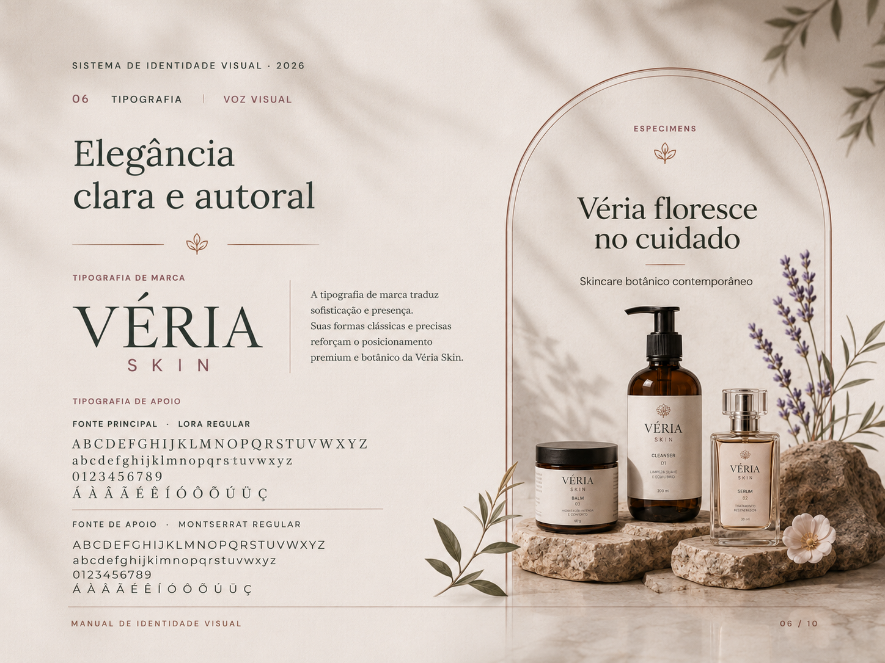
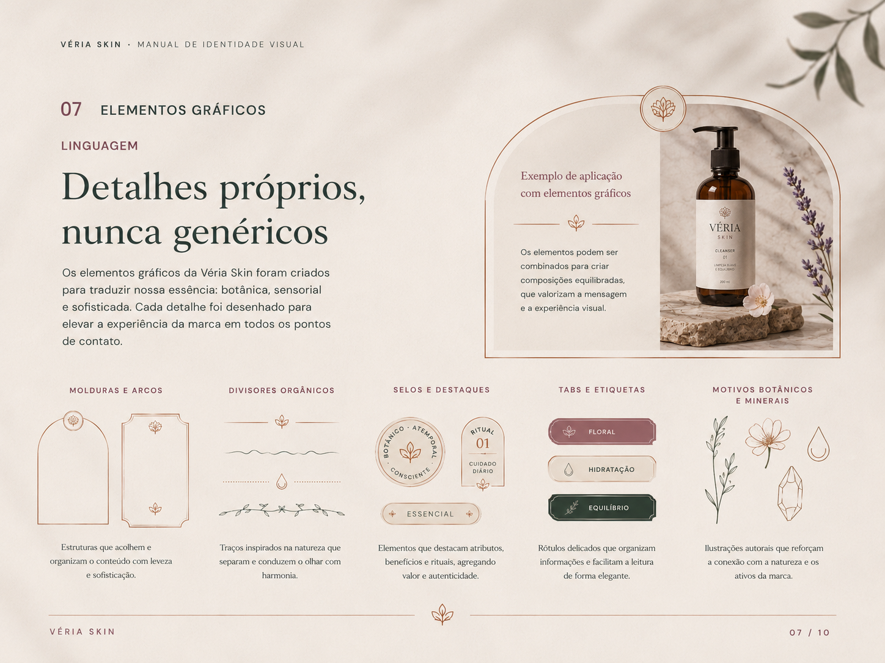
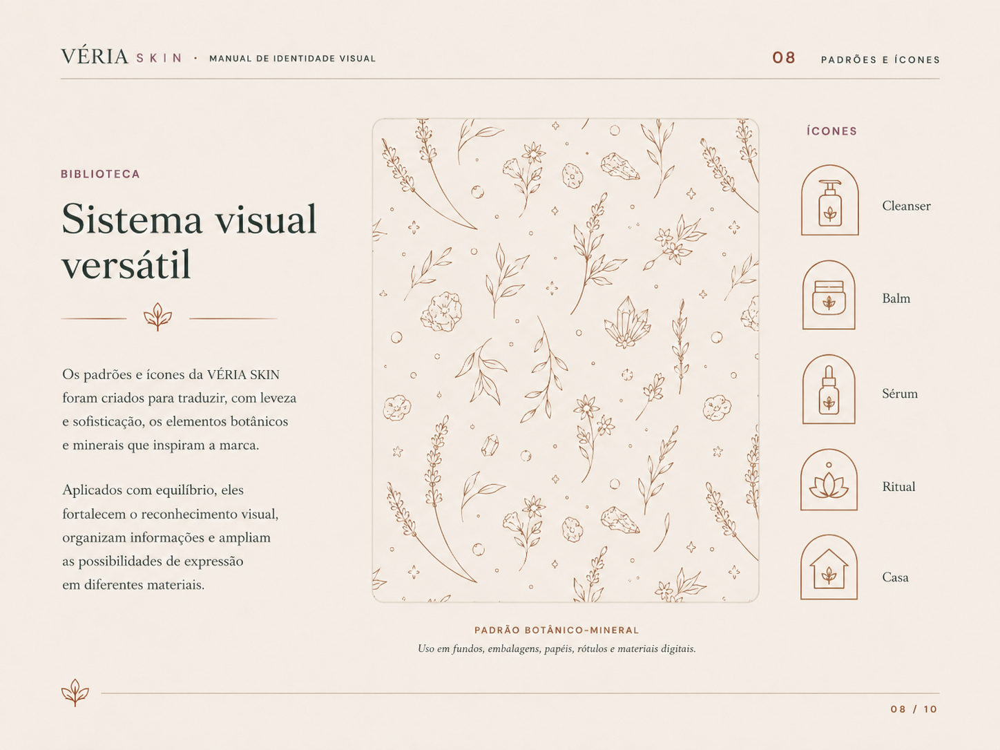

Botânica entra na estrutura visual e não apenas como decoração.
PROJETO-CONCEITO IDENTIDADE · COSMÉTICOS
Eu construí uma marca para mostrar como o cuidado pode virar presença.
VÉRIA é um exemplo de como eu apresento uma identidade ao cliente: não só com logo e paleta, mas com produto, fotografia, embalagem, conteúdo, textura e regras de uso funcionando juntas.
EstratégiaMarcaEmbalagemDigital
01 · O QUE EU QUIS RESOLVER
Botânica sem clichê.
Premium sem ficar distante.
Eu quis que a marca parecesse cuidadosa antes mesmo de alguém ler qualquer explicação.
Por isso, a linguagem combina formas orgânicas, contraste editorial, texturas de matéria e uma paleta que consegue ser suave sem ficar genérica.
Textura, luz e materiais deixam o produto mais próximo e confiável.
Hierarquia simples, respiro controlado e contraste onde importa.
O sistema comporta novas linhas, kits, campanhas e formatos.
02 · SISTEMA EM PROVA
Eu mostro a marca funcionando, não só descrita.
Estas páginas fazem parte do material visual do projeto. Mantive todas no site para o cliente conseguir comparar decisões e aplicações sem depender só do PDF.
03 · COR, MATÉRIA E RITMO
Eu evito depender de cores chapadas.
Além das cores-base, eu defino mesclagens, transparências e fundos para a identidade ter profundidade sem ficar pesada.
Bosque#1F3A32
Vinho#713B4A
Pétala#D9A8AE
Creme#F4EDE4
Terracota#B96F58
Ouro suave#B39263
BOTÂNICOverde · sálvia · ouro
FLORALvinho · pétala · creme
EDITORIALameixa · terracota · pérola
04 · EXEMPLOS VISUAIS DE USO
Eu apresento o sistema onde ele precisa sobreviver.
Embalagem, campanha, composição editorial e conteúdo digital aparecem juntos para o cliente enxergar continuidade — não peças soltas.

01 · CONTEÚDO
Peças que mantêm a assinatura mesmo mudando de formato.

02 · PRODUTO
Rótulo, matéria e fotografia conversando como um único sistema.

03 · CAMPANHA
Uma direção flexível para lançamento, destaque e educação.
05 · ENTREGA
O que eu quero que o cliente veja no final.
Não é “uma logo bonita”. É um conjunto de decisões coerentes, exemplos de uso e arquivos que deixam a marca pronta para continuar sendo usada depois da entrega.
logo e variaçõespaleta e mesclagensmolduras e elementosdireção fotográficaaplicaçõesmanual completo
06 · MANUAL COMPLETO
Se quiser ver tudo em sequência, o PDF continua aqui.
O site mostra todas as imagens principais e o PDF fica disponível para leitura contínua, download e apresentação.
Se o navegador não exibir o PDF aqui, use os botões acima.
07 · PRÓXIMO PASSO
Quer que eu construa uma identidade com esse nível de cuidado para a sua marca?
Eu adapto conceito, sistema, aplicações e entregáveis ao seu negócio, ao seu público e aos pontos onde a marca realmente vai aparecer.
Solicitar proposta WhatsApp · Anderson Honorato